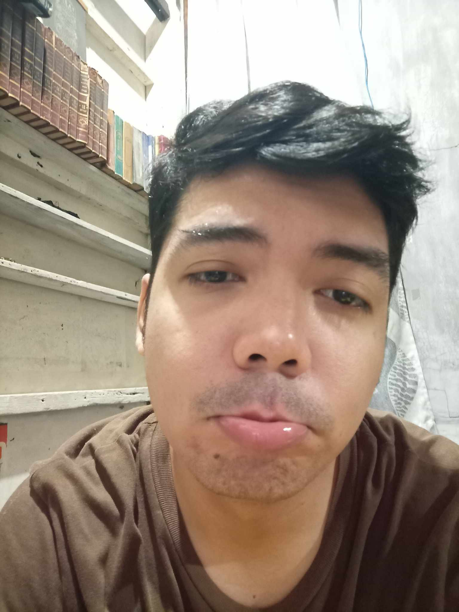
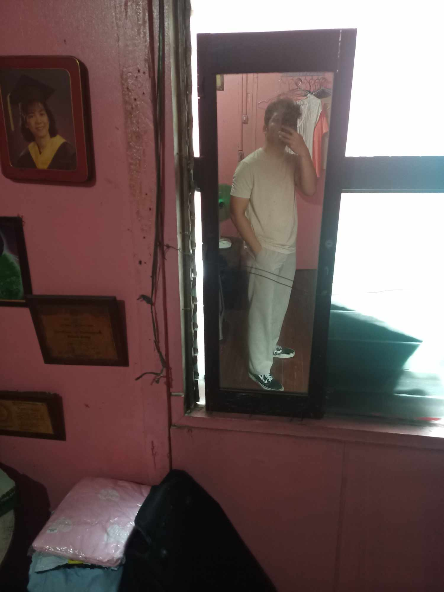
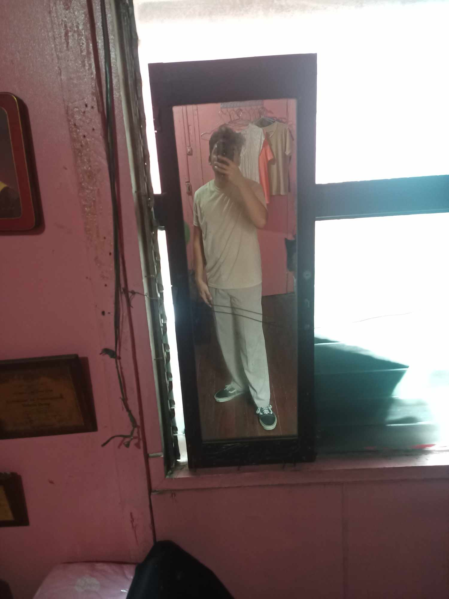

Goood Morning Babycakessss Ko ♥♥♥ Take note that this is "also" temporary.Since that we are doing a one-way communication, i do not intend to continue to create a mini social media for us for the meantime. Saka na lang po natin gawin yun, na you can communicate back to me, pag pwede na po tayo mag contact sa isa't isa. Pero sa ngayon eto lang po muna. Kahit ako lang muna mag sesend ng message sayo, at basahin mo po dito sa website. Although, napaka basic pa neto. Hahahaha. Pagalingin Nawa po ikawww 🙏🙏🙏 sobrang lamig ng panahon ngayon.
Hello Again Babycakess and Honeybunch koo Today is another day of missing you.Since that we are doing a one-way communication, i do not intend to continue to create a mini social media for us for the meantime. alam mo naiinis ako kay tong. kasi mag DSWD dapat kami today, kaso late na ko nagising. Sabe ba naman nya puyat kase ng puyat, sino ba yan. Nag haha react na lang ako tas sabe ko kaka code kaya napuyat. Alam na kasi nila na no-comm tayo. Pero si tong yung mga tinginan at chat nya sakin ayaw maniwala kainis na bata laging nag iimbestiga XD ayan convo namin hahahaha. wag na wag mo bibigay kahit kanino tong link ng website ah. d pa kase encrypted e. pero later lalagyan ko na po.
Hi there, my Babycakes! Miss na kitaaa talaga e. Huhu so nag record ulit me ng voice message. Pakinggan mo po bago ka mag sleep ahahaha alam ko mamaya kapa matutulog e. Puyat ka ng puyat. At saka kung natuloy man general cleaning mo sana okay ka lang po, hindi ka masyado napagod or natrigger asthma mo. sana gumana tong audio sa browser ng iphone mo.
Pag nag ooverthink ka po ulit, chat mo lang ako ha. I'm always here for you, I'll never get tired of saying that with God's help I will always love you and will never hurt you, but will make you smile forever. ♥♥
John Angelo Alabarca December 5, 2024
Isang Magandang Ikaw Sa Umaga, Aking Mahal♥♥♥ Salamat sa Dios, sa panibagong umaga hehe.Always pray when you're sad and about to cry. Then reach me out, pag sobrang lungkot and vulnerable mo po. Lagi ako makikinig sa mga sasabihin mo, at wag kang matakot na baka magsawa ako dahil paulit ulit. Hindi po ako magsasawang mag explain sayo, mag bigay ng assurance, kung gaano po kita ka mahal 😘😘. I love youuu very much, my Honeybunch ❣️❣️❣️
John Angelo Alabarca December 6, 2024
>Good Morning Po Honeybunch Ko❣️❣️❣️ Sorry medyo na late lang po ako ng update dito sa website. Nakatulog ulit kasi ako po e, nagising nako kaninang umaga.Sana okay ka lang po, at hindi ka nag ooverthink. Ayun medyo may konting lungkot kasi kailangan na talaga nating magtiis na no-contact. Gusto ko lang din po ipaalala sayo na sa awa't tulong ng Dios, lagi lagi po kitang Minamahal🥰🥰 I love you so muchhh po babyycakes, kain ka lagi madami ha tas yung mga gamot mo po at vits wag kalimutan. Samahan Nawa po 💖💖🙏🏼🙏🏼 God Willing 🙏🏼
ᴉ,ɯ sɐp˙ ᴉ ɯᴉss n :(((( grabe kaka update ko pa lang ng website nakita mo agad XD
John Angelo Alabarca December 7, 2024
Goood Morning Po Babyyyyyyy!!!!❣️❣️❣️ Sorry super late na naka update dito. Napasarap sleep ko kagabe ahahaha.Papunta na po pala ako ng lokal, dalo na po me ng WS at TG loobin. Naka white shirt lang din po ako tas di po ako nag ahit, and ready na din po wallpaper ko ahahaha. Thank you po talaga kagabi. Yung last Bio ko na yun wala namang sad emoji dun e, pero ang galing mooo na feel mong malungkot ako XD. Kilalang kilala mo na ko e no. I love you so muchhh babyycakess kooo. 😘😘 Samahan ka po Nawa sa maghapon 🙏🏼🙏🏼 wag masyado magpagod ah, pahinga pahinga din. Tas yung mga gamot mooo inhaler vits etc. At kumain ng madaming healthy foodsss 🥰🥰
John Angelo Alabarca December 8, 2024 | 11:16pm
Hello po, Gooood Evening Babyyycakessss♥♥♥ Nakakapagod po today ang daming ganap kaya d po ako agad nakapag update dito sa website.Kakauwi ko lang po actually. Galing basketball po. Pero kaninang umaga nag photoshoot kame sa may Ninoy Aquino Wildlife and parks po. Then inabot kame ng ulan nagpatila kame sa may ever commonwealth dun na din nag lunch, tapos diretso sa may intramuros yung tabi ng ilog yung maraming kainan. Tas kinagabihan basketball naman. Nakalaro naman si bro. Ralf, ang galing po nya mag basketball, natalo kame nung last game dahil sa kanya e, kalaban kase namin sya. I am hoping na you are fine po and doing well. Samahan ka pong palagi sa mga duty mo po 🙏🏼🙏🏼. Always eat healthy foods kain lang po ng kain XD. Mahal na mahal po kitang palagi awat tulong 🥰🥰♥♥
John Angelo Alabarca December 9, 2024 | 10:55pm
Good evening po. Sana okay ka lang po :( Gusto ko sana itanong anong nangyari. Bakit po nabawasan yung post mo sa IGFrom 190 to 180. Tapos inalis mo po yung BIO. Nung isang araw pa ko nalulungkot kasi hindi kita nakakausap, pero dahil nag hohold back ka, nag hohold back din ako 😥😥 I'm sorry kung di ako agad nag reply sa BIO kasi lalo lang ako nalulungkot, kaya gusto ko na sana na wag na muna mag reply. Pero kung nagbago na po isip mo, okay lang din. Eto talaga yung inaalala ko. Hindi ko alam kung bakit. Bigla na nga ko nawalan ng gana mag basketball simula nung nakalaro ko si ralf. Na realize ko na mas maraming magagaling out there. Hindi lang sa basketball, pati sa real life. Kaya please tell me ahead of time, kung sakaling na fall out of love ka na sakin, at lagi ka naman pong malayang makapamili, wala ka pong obligasyon sakin... Sana okay ka lang po at di ka nag ooverthink. :'( Ano ma't ano pang mangyari, lagi lagi po kitang minamahal kahit ang hirap sa sitwasyon natin, na dapat magpasakop. 😥😥 See you soon loobin sa kasal po, kung makakapunta ka po. 😔😔
John Angelo Alabarca December 10, 2024 | 4:14pm
Good Afternoon po Babyycakesss Koo 🥺🥺 I just want to say na thank you, na you still there, kahit nasaktan kita.I'm really sorry, sa nagawa kopo. Naiparamdam ko sayo yung mga insecurities mo from past. Alam mo naman pong mahal na mahal kita. Sana mag heal ka na po emotionally. :( And I know that these words are not enough to prove that. Kaya I will always pray na sana maayos pa tayo, loobin sa hinaharap. :( I don't want to give up. Please don't give up on me. Am sorry if I look like a pathetic. 😥 I love you always like what I'm saying from the very beginning. 😥♥♥
John Angelo Alabarca >December 11, 2024 | 12:42pm
Helloo Po Honeybunch Ko🥰🥰 Na trigger na naman asthma moooo hays. Pagalingin Nawa po.🙏🙏Palakas ka po, kain ka madami kung makakaya mo po, para kahit papano labanan mo kung kaya mo lang po ah wag ipilit baka kapusin ka ng hininga. Yung Code Geass kahit ako na lang po muna manonood. Ipahinga mo nalang muna yung katawan mo po haaa. Para d ka na masyado mapagod po. Konting review ko lang sa Code Geass from ep1 to ep3, ayun interesting yung plot kase sabe mo madame pa mangyayari, saka mahilig din ako sa action okay din animation. I'll watch ep4 later maybe two to three eps a day kung kaya po.🥰 Pagaliiiing ka po. Then yung no-contact natin baka pwede i extend huhu. May sakit ka na naman ihhh :(((( Awat tulong po ng Dios, palagi kitang minamahal, babycakess q.😘😘 Please take care of yourself while I'm not around. I love you so much.
John Angelo Alabarca December 12, 2024 | 9:24am
Good Morning My Princess 😥♥♥ I don't know If I still deserve you. I am now starting to question myself, kagabi ako yung nagdadahilan nag eexcuse naipasa ko pa sayo na kunyari logical but in reality it is not.Sinabihan kitang duda ka sa sakin, wala kang tiwala, tapos inakusahan pa kitang ginagawa mong excuse yung sarili mo, pero in reality, it is just your insecurities that kicks in. Pero ako talaga yung dapat kwestyunin yung sarili ko. Despite of the fact that you are hurting, you are crying, you're still trying to understand me, which I don't deserve. 😥😥 Lagi ko pa naman sinasabe na gusto kita pasayahin, matulungan ka sa paglilingkod mo, pero ngayon ngang wala pang tayo, ganito na yung naging epekto ko sayo. Failed na agad ako :(((( I am really sad. Pero wag ka po mag overthin, don't get me wrong po, I am really okay with us, ours. Hindi ako galit sayo Hindi ako nagalit sayo kagabi baby, yung mga words ko kagabi, due to emotionally and physically tired I can't think of anything what is right and what is wrong. Kaya I am really sorry for being a jerk (which I always am). Napaka swerte ko sayo, napakalalim ng emotionally intelligence mo. Sobrang mahal na mahal kita. To the point na gusto ko na sanang ilayo yung sarili ko sayo, para hindi ka na masktan, hindi ka na umiyak. Parang a brittle glass na pag hinawakan ko e mababasag lang. Mas gusto ko nalang tignan ka sa malayo, i-admire, mahalin ng hindi ka nasasaktan. Pero gusto kong i-workout tong mga flaws ko, ayokong lumayo sayo T_T. Mahal kita e. These words are not enough, but I am trying to express myself to the fullest. Napaka buti mo po baby. :(((( I don't deserve your love, I don't deserve you. I am really sorry for what I did last night :((((
John Angelo Alabarca December 13, 2024 | 10:40pm
Goood Night Na Babyyycakes Kooo 😘😘 Di na po muna tayo mag llate night talks huhu, pagaling ka po muna.Sorry napupuyat kita netong mga nagdaang araw, tapos na stress ka pa sakin. Nasaktan kita, nalungkot ka. Isa din sa mga dahilan yun kung bakit ka po nanghihina :(((. I'm really sorry ulit babyyycakes ko :( Tapos tom di na muna tayo magkaka chat kasi TG. Loobin apalit po kami, pinilit ako ni Harry e ayoko na din tumanggi baka isipin umiiwas ako dahil sayo. Pagalingin Nawa po ikaw Honeybunch ko🙏🙏 Mamimiss kita, icchat pa din kita bukas loobin ahahaha. Okay lang kahit di ka po mag replyyyy. Pero i off mo yung notif sa IG kasi mag uupdate ako ng mag uupdate sayo bukas. Okay lang po kahit di ka na mag seen or reply. Hehe. Goood night na babyyy, palakas ka po haaaa. Yung inhaler mo tas mga gamot po. Pilitin mo din kumain kahit kontiii haaa. Mahal na mahal kitang palagi awat tulong ng Dios baby kooo 😘😘 ❤️💗💖I LOVE YOUUUU MY PRINCESS💖💗❤️
John Angelo Alabarca December 14, 2024 | 12:46pm
Good Aftiee Honeybunch Koooo💖💗 Rest well for today haaa, wag na po masyadong magpagod at magpuyat po.Starting today baby, kumain ka on time po at mga healthy foods lang muna. Iwas muna sa mga junk foods at fast food hanggat maaari. Tapos inom po ng tubig. Wag kakalimutan mag inhaler at yung mga vitamins. Tapos wag na wag na din magpupuyat. Wag ka na din maliligo ng gabi, mag hilamos ka nalang po yung walang scent. At siyempre unang una, higit sa lahat humingi po tayo ng awat tulong sa Dios na palakasin ka po at pagalingin 🙏🙏 May 1 week ka pa po para gawin yan strictly ah. Lalo na yung pagpupuyat at pagligo sa madaling araw. Gawin mo yan baby haaa please. Para loobin sa SPBB maka duty kana po at okay na pakiramdam mo. Nag update na me bago umalis kasi d nako makaka update maya madaling araw na kami makaka uwi po. Mahal na mahal kita Babyyycakessss♥♥♥ I love youuu po alwaysss, Samahan Nawa tayong palagi ng Dios 💖🙏🙏💗 Loobin Ng Dios, Sa Tahanang Aalagaan Kita Pag May Sakit Ka💖💖
John Angelo Alabarca December 15, 2024 | 9:23am
Good Morning Babyyycakessss♥♥♥ Dec 15 na huhu, lapit na mag Dec 17, na dapat mag no-contact na us, and purely dito na sa Website.Magandang ikaw po sa umaga 💖💖 I am praying and hoping na sana gumaling ka po at lumakas lakas ka bago mag SPBB. Para maka duty ka na po ulit sa Quiapo, babyy. Kain ka na po almusal pagkagising mo ha. Sobrang mahal na mahal po kita wag mo po papabayaan sarili mo, mamahalin pa kita babyyyy 🙏💗 May GA po pala kami later, mga Zone 2 sa N.Panaderos po. 11am start. Kaso di pa ko nakakadalo ng WS kaya pag dating ng 2:30pm mag WS muna ko XD, tas balik GA after. ADVANCE HAPPS SPBB PO BABYYYYCAKESSS KOOOO💖💗!!!! Samahan Nawa po tayo sa buong maghapon at sa mga darating pang araw. I love you so much my hottie princess🤤🤤🥰🥰😘
John Angelo Alabarca December 16, 2024 | 6:46pm
Haloooooo BabbyyCakess Koooo💖💗 Mabilisan lang po ito kasi mag SKAP kami later ahahahaha. D na ko makakaupdate mamaya.Madaling araw na siguro kami makakauwi neto. Good evening babyycakess. Although pwede ko naman po i chat ito kasi nagkakausap pa naman tayo e. Pero kasi gusto ko everyday may diary ako :D. Sana po umokay na pakiramdam mo babyyyy kooo. Di kita mareplyan sa chat mo kasi tinatype ko ito XD. At yung about kay mama mo, okay lang po yun baby, ako na bahal loobin sa hinaharap. At mag focus ka po muna sa pagpapagaling sa sakit mo babyyy. Akala ko before SPBB magiging okay ka na ihhh. Sundin mo na po yung bagong doctor mo ah. At least specialist po talaga yan. May awa po ang Dios babyyy. Ayuuuun halaaaa 7pm usapan namin nila kuya ry XD. Sobrang mahal na mahal po kita babyyycakesss kooo. Chat chat na ulit tayo later until December 17 midnight huhuhu. :((((( >Although di pa tayo nagkikita ulit XD I love you so muchhhh your highness 🤤🥰🥰
John Angelo Alabarca December 17, 2024 | 12:04pm
Gooood Afternoon Your Highness🥰😍💗😽 Sana po ay bumuti na ang pakiramdam mo todayyyy. Sana effective yung gamot, awat tulong ng Dios🙏🙏Halooo there babyyy sa bulacan, meycauayan XD. Miss na kitaaaa. Feeling ko ang distant natin sa isa't isa :(((( Kasi di na tayo nagkaka chat ng matagal, di na din nagccalls huhu. Pero okay lang po para naman sa health mo yan e. Focus ka muna sa pagpapagaling po, magpalakas ka babyyy ha. Pray po tayo palagi na pagalingin ka po, at laging sumunod sa doctor haaa. Inumin on time yung mga gamot na nireseta. December 17 na today :((((( Pano yan babyyy last na chat na ba natin sa IG? Parang ayoko pa kasi nga may sakit ka pa. Gusto ko mang hingi ng update sayo hays. 😿😢😥 Pwede naman siguro extend until tomorrow XD Pero dapat before SPBB mag no-contact na po tayooo. Gusto ko mag focus ka na muna sa health mo and sa sa duties mo babyyy. So ayuun, basta pagaling ka po Honeybunch ko. May awa po ang Dios🙏🙏 God willing, magluluto tayo ganito 🙏🥰😍😘❤️ I love you so much my princess 🥰😘
John Angelo Alabarca December 18, 2024 | 11:56pm
Good evening Babyyycakesss kooo This is our last day na :(((I am really sad right now baby. I dont know what to say but we need to have discipline this time po. Dapat talaga no-contact na. Sobrang mamimiss po kita. Lagi lagi ka pong mag iingat ha. Alam mo namang mahal na mahal kita sa awat tulong po ng Dios. I love you so much babyycakess ko, Honeybunch ko. Loobin ng Dios sa panahong pwede naaaa, hintayin mo po ako babyy koooo
John Angelo Alabarca December 19, 2024 | 6:26pm
I Miss You Babyyycakesss Ko 😢😥 It feels like forever since we last talked yesterday.Parang ang tagal tagal na natin di nag uusap :(( Miss na kita agad. Now lang din po ako naka update kase lunch nako nagising. Pag malungkot talaga ako nag ooversleeping ako. Sana pagaling na po yung asthma mo at mawala na hingal mo para ma-check up ka na ng doctor mo tom po loobin. Inom lagi ng gamot on time haaa. Wag papalipas ng gutom laging kumain ng masustansya at damihan mo kung kaya mo po kumain ng madami. Wag na wag na din magpupuyat babyy haa. At una sa lahat lagi ka po mag pray babyycakes koooo. I love you so muchhh always to the moon and back 😘❤️ Mahal na mahal kita Honeybunch kooo. Hindi Niya tayo pababayaan, awat tulong Niya 🙏🥰
John Angelo Alabarca December 20, 2024 | 3:40pm
Good Afternoon Your Highness🥰😍💗😽 I've been doing this website since 5am XD.Medyo nakakapagod po XD. Sana okay ka lang ngayon dyan babyyy. Kumusta na kaya results ng check up mo today? I am hoping and praying na okay na po sana ikaw. At mabigyan ka na ng tamang gamot ng bagong doctor mo. Wag ka na din papalit palit ng doctor babyycakess ko. At lagi na susundin yung sasabihin ng doctor ah. Siyempre una pa din ang panalangin. 🙏🙏 Yeyyyy it's day 1 na laterrr. Happy SPBB babyycakess koo. I don't know kung nakapunta ka ng Quiapo today. Pero kung di po kaya ng katawan mo sana ipahinga mo nalang po muna, pero may awa naman ang Dios babyy. Kung ano ipapayo ng doctor wag makulit ah XD bibigwasan kita. Iwas iwasan na pagpupuyat.Namimiss na kita sobra, pero need natin magtiis muna babyy ha. Wag ka po sana mag overthink. Etong website na to temporary lang din ahahaha. Wala pa to functionality e, di kapa makakapindot dito XD. Lalagyan ko to ng mga reacts loobin :DHelloo there aking prinesa, always pray, lagi magtagubilin haaa. Kapag nag ooverthink ka po, luhod po muna at pag di mo na talaga matiis contact me ha. Wag mo isipin na natitiis kita, kasi nga ngayon pa lang gustong gusto na kita i-chat ih. I am just holding back. After SPBB loobin or mamaya siguro nonood ako ng code geass paisa isang episode :DLagi mo po tatandaan na sa awat tulong ng Dios mahal na mahal po kitaaaaa.😘😘❤️ Sa kapahintulutan ng Dios, magkikita tayo at magkakausap ulit ng wala ng restrictions🙏❤️🙏❤️ I love you alwayss my princess🤤😘 I miss you malala :(((
John Angelo Alabarca December 21, 2024 | 8:45am
Hiiii poo, Gooood Morning My Princess ❤️😘🥰 Today is my Mama's 57th Birthday! Ours in the future God Willing 😁😇😍 Ayun makakapag apalit sila later loobin may two extra slot kasi si joseph. Dapat sa akin yun kaso wala akong kasama :(( Yayain sana kita kaso d naman pwede huhu. 🥺 At saka may sakit ka pa di ka din makakabyahe pa ng malayo. Pero nakita ko stories mo sa IG naka duty ka na pala sa Quiapo? Yeyyyy. Salamat sa Dios🙏🙏 Mabuti naman at pinayagan ka na po ng doctor mo bumyahe ulit. At base sa looks mo mukhang okay ka na po. Sana magtuloy tuloy na pag galing mo sa asthma babyycakes ko loobin 🙏🥰. Wag na masyado magpupuyat ha, baka may iba ka ng ka-late night talks 🥺🥺 Medyo malungkot lang me baby, ay di pala medyo malungkot talaga kagabi kasi wala pa din name ko sa list 🥺. Pero ang ang ganda ng paksa e, Dios naman ang gumagawa ng kahatulan kaya ayun dapat hindi malungkot. Kundi matakot kasi Siya naman gumagawa ng kagandahang loob, kahatulan at katuwiran. 🙠Namimiss na po kita, buti na lang at nag stories ka sa IG mo. Ang ganda ganda mo babbyyy ko. Baka madami na naman umaaligid sayo. Ay hindi pala baka yun, lagi lagi naman may nagpapapansin sayo.🥺🥺 Sana nasa maayos ka pong kalagayan palagi Honeybunch kooo. Wag ka na po sana mag ooverthink ng malala ha. Awat tulong ng Dios nandito lang po ako palagi. Nalulungkot ako from time to time, pero hindi naman tayo kinukulang sa paalala, sa aral, para sumaya ulit 😇 Kahit na sobrang gustong gusto na kita makita. Loobin magkikita naman tayo sa January 12 😍😘❤️ Sa awa at tulong po ng Dios, palagi kitang mamahalin babyy ko. I love you so much and I miss you so much rn. :((🥺🥺 Alway be happy babyycakes ko haaaa, wag na po ikaw malulungkotttt. Wag ka napo iiyaaak haaaa. Pray po lagiiii, tuhod at sahig. 🙏😇
Sa Kalooban Ng Dios At Sa Awa't Tulong Niya🙏
At saka finding someone else is definitely not an option, because no one is better than you. You're the best I've found. 🥰❤️😇
John Angelo Alabarca December 22, 2024 | 11:48am
Magandang Araw Po Babyyycakes Koooo💖💗 ♥♥♥ Mahal na mahal po kita :( ğŸ˜ğŸ˜¢Sobra po akong nababalisa ngayon. Pagod lang din siguro tas wala pang tulog. Ang dami lang din pong sigurong nangyari kagabe hanggang ngayon. Sobra po akong nalulungkot umiiyak ako. ğŸ˜ğŸ˜¢ Pero wag ka po mag alala hindi po ako nag ooverthink about sayo or satin, kaya please wag na wag mo po ako icchat muna. Naiyak ko naman na lahat kaya medyo gumagaan na pakiramdam ko. Nagsimula to nung nabanggit ni Kuya yung about sa mga suspendido, yung mga humihiling pero hindi naman sumusunod sa payo, mga hindi pinapakinggan ng Dios 😠Nalungkot ako, na isa ako dun e dahil nga S din ako. Kaya excited ako sa magiging paksa mamaya na medyo kinakabahan na ewan basta. Tapos non nung bago mag closing prayer, yung awitan na, si Howie nag collapse. As in napaupo sya nawalan ng malay. Sinasampal sampal namin sya ginigising, awa naman ng Dios, umokay siya, sobrang dami din kasing tao dun sa indoc room kaya konti oxygen. After non d na kame nakatulog kase magsusundo kame ng kapatid na officer galing visayas, sinabihan kame ni kuya marlon de leon. 3am umalis na kame bumyahe na papuntang NAIA terminal 2. Then hinatid namin yung mga kabataang officer sa visayas tatlo silang lalake sa apalit byahe na naman ako nag drive. So nung nahatid na namin around 8am na. Kasi naligaw pa kami sa hotel na tutuluyan nila. Kaya ngayon lang po kami nakauwi around 11am. Sobrang nakakapagod at wala pang tulog kaya pag uwi ko umiyak muna ko ng umiyak sobra akong emotional right now. Naiisip ko baka di nako pinapakinggan ng Dios dahil S ako. Hindi ko po alam babyy, iniisip ko na baka hindi ka na Niya ibigay sakin, ğŸ˜ğŸ˜¢. Pero umookay na po ako alam ko naman na may mas malalim pang mga maipapaliwanag na paksa mamayang 3rd day loobin. Basta wag na wag mo po ako icchat babyy haa, wag natin hayaang maputol yung no-contact natin. Kaya ko po babyyy awat tulong. Patawarin sana ako ng Dios kung nakakaisip ako ng ganto, gusto ko na mapakinggan yung magiging paksa later para maitama na yung pag iisip ko. At hindi pa rin nagbabago yung pagmamahal ko sayo. Sobrang mahal na mahal kita babyyy ko. :(((💖💗😢😢 Alam ko naman po at nauunawaan na Siya ang gumagawa ng kagandahang loob, kahatulan at katuwiran, at kung ano pa din ang magiging kalooban Niya, sa akin, sayo, at sa atin. Kailangan ko lang maliwanagan sa magiging paksa. Very striking talaga kasi sakin yung pag banggit ni Kuya about sa mga S kagabi :'( I love you so muchhh po honeyybuncch koooo 🥺🙏💗😢
John Angelo Alabarca December 23, 2024 | 2:18pm
Magandang Tanghali Honeybunch KOOOO💖💗 I saw your IG story, Ingatan po kayo sa byahe 🙏💗 Grabe ang laking tao pala talaga ni Kiel ahahahaha. Tapos nilagyan mo pa ng make up XD. Yung itsura nya mahahalata mo talaga na malakas siyang tao. Athlete na athlete yung mukha nya. Enjoy kayo dyan babyy papuntang morong ha. Wag masyado magbababad sa tubig kasi may sakit ka pa e. Sana naging okay ka napo ngayon. At mukhang pinayagan ka naman ng doctor na bumyahe at pumuntang beach yeyyyy. Relax lang po muna kayo dyan babyyycakesss ko. Halos past 1pm na din ako nagising. Salamat sa Dios. 🙠Bumawi ako ng tulog, sobrang nanghihina talaga ako kahapon at emotional pero ngayon okay na po ako ulit. Ang ganda ng paksa nung 3rd day. Hindi naman pala lahat ng S ganon, nakadepende pa din kung ilang beses ka na pinagsabihan tapos ganon pa din yung ginagawa mo at ilang beses ka ng pinagbigyan ng chance at ganoon pa din walang pagbabago doon na hindi ka didinggin. Salamat sa Dios sa mga pagtuturo kahapon 🙏💗 Masyado lang ako nag overthink. Pero sa kapahintulutan pa din naman ng Dios🙏🙏 Ayon sa Kanyang kagandahang loob na sana mapatawad na ako ❤️😇😊🙏 Kumusta ka naman diyan aking prinsesa? I am hoping na hindi ka po nag ooverthink ng malala. Huwag ka din po sanang malungkot masyado na kasi makaka apekto talaga yan sa health mo. Lagi manalangin muna ha at sundin mga payo ng Dios at siyempre payo ng doctor ahahaha wag ka makulit inumin yung gamot on time wag gawing option yung inhaler at wag na papalit palit ng doctor. Wag ka magpupuyat kumain ng madaming masustansyang pagkain haaaa. And please eat on timeee wag magpapagutom haaa mamahalin pa kita loobin 😊🙠I love you alwayy babyyycakess,honeyybuncch, my princess, your highness koooo❤️😇😊🙏🥰😍😘 Namimiss na kita, I wanna see you right now :(( I'm longing for you. Lagi lagi kitang minamahal babbyyyycakess kooo sa awat tulong Niya 🙏🥰
John Angelo Alabarca December 24, 2024 | 10:07am
Hiiii There, Babyyycakes Kooo, Good Morniiing 🥰😍😘 Lamig dyan sa morong lalo na sa umaga. Wala kang kayakap chz XDDahil nga malamig dyan, dapat naka jacket ka tas makapal na kumot. Sana okay lang po ikaw ngayon babyyycakes, awat tulong. At yung gamot mo po ha wag kalimutan. Dapat on time ka uminom nyan at mag almusal ka na din po pagka gising mo babyyy, kumain ka ng madame haa lalo na po yung gulay pangpalakas yun tas inom ng madami ding tubig. Hindi naman siguro umuulan dyan no? Sana di umuulan dyan para maganda view ng sunrise dito kase sa Manila medyo umaambon e. Nakakita ka na ba ng seashells? Hahahahaha kung nakakita ka post mo sa IG XD. Kumusta naman kayo dyan babyyyy? Wala naman siguro naging problema nu. Kumusta naman si Kiel, behave sana sya ❤️😊🙏. Wag ka din muna lumangoy pag malamig pa yung dagat. Siguro mga tanghali na XD para may sikat na ng araw. Alam mo namang bawal sayo ang malamigan e. At siyempre enjoy po kayo dyan honeyybuncch ko 😘😘 Ang ganda ganda mo babyyy sa mga IG stories mo 😍😘. Ikaw pinakamaganda sa inyo. Para kang walang sakit talaga. XD Blooming lagi ahahahaha. I love youuuuuu your Highness🥰😍💗😽 Susunduin ko sana now si Joseph sa laverdad gamit motor. Nanghiram na ko ng motor kay kuya edward e. Kaso nga umaambon ambon dito. Dko pa kaya mag motor ng umuualn kaya pinag- commute ko nalang muna si Joseph XD. Naka leave kasi sya ngayon at bukas. Tuturuan ko kase sya mag motor mamaya nalang sigurong hapon o gabe kapag tumila na yung ambon, loobin. Gusto na din kasi paturo ni Joseph mag motor e ahahahha. Pauwi na ba kayo ngayon? Or baka extended pa kayo isang araw. Pero kung pauwi na, ingatan nawa po kayo sa pag uwi babyyy. Salamat sa Dios🙏🙏 Kakatapos ko lang din mag almusal. Kape lang at tinapay na may peanut butter. Ikaw ano kaya almusal moooo pero kung ano man yan damihan ang kain haaa. Mahal na mahal po kitang palagi babyycakes koooo. Wag po ikaw malulungkot haaa kahit na pang Day 6 na naten na no-contact. Namimiss kita palagi. :((( See you soon God willing babyyyyy. I love youuuuu always 😘❤️🥰
Nag try ako maglagay ng video from fb reels dito ko na lang isshare 🥰 sana gumana sayo XD
John Angelo Alabarca December 25, 2024 | 6:05am
Magandang Umaga Po My PRINCESS💖💗❤️ Ang ganda ng mga fireworks na pinost mo sa IG story 🥰😍Kumusta ka naman po dyan babyyycakess ko? Mukhang di pa kayo umuuwi base sa post mo e. Nag IG story ka pa ng fireworks. How's your day honeyybuncch koooo? Are you alright? Are you not sad? Sana maayos po pakiramdam mo ngayon, sana hindi na ganong katindi yung atake ng asthma mo at may proper medication na naireseta sayo yung doctor. Sana hindi kapo nalulungkot dahil no-contact na tayo. Ako kasi nalulungkot ihhh :((( Sobrang namimiss nakita palagi. Kaya nga kanina pa ko gising d ma maka-sleep huhu. 😓🥺 Pero ganon pa man dapat maging disiplinado tayo no-contact na talaga this time, pang 1 week na natin na no-contact. Isipin nalang natin na magkikita naman tayo sa January 12 loobin XD. Pero sa totoo lang am sad. Kung ano ano na naman pumapasok sa isip ko. Kaya ginagawa ko nag bback read nalang ako. Pag nakikita ko mga pics and vids mo sumasaya na ako ulittt. Hays. Nag tanggal na din pala ako ng mga mukha ko sa IG. Ayoko na muna mag post ng mukha sa socmed pala. Na ddown na naman ako ihhh. Pero am quite okay naman babyyycakess ko kaya donchu worry. Lagi lagi ako nag aabang sa IG story at post mo XD. Kung sakali dito nalang ako mag uupload ng mga pics and vids ko hehe.🥰😘 Sana ikaw din kung nalulungkot ka, i will post my pics and vids here kasi di naman talaga maiwasan yun alam ko namang namimiss mo XD cant blame you chz ahahahaha. Para di ka masyado malungkot. Nagpopost din ako ng voice message paminsan minsan. Naiirita kasi ako sa boses ko XD masyadong pabebe pag alam kong ikaw kausap ko ahahahah. Hindi ko din pala naturuan mag motor kahapon si joseph grabe yung ambon simula umaga hanggang gabe walang tigil XD. Tatry ko turuan mamaya loobin sana wala ng ambon. Sayang leave ni joseph na 2 days kung dko rin matuturuan ahahaha kawawa naman sya. Ingatan Nawa po kayo sa pagbyahe nyo labbssyyy kooo. Pagkauwi nyo ng bahay pahinga na agad wag na magpupuyat. Wag din kalimutan yung mga gamot mo ah. Palagi kumain sa oras at kumain ng tamang pagkain wag puro order online XD. Sa ngayon ikaw muna mag alaga sa sarili mo. Para loobin ako na mag aalaga sayo sa hinaharap. Mamahalin pa kitaaa babyycakess koo. Mahal na mahal kitang sobraaa. I will always love you your Highness🥰😍💗. Mmmwaaaaaaaaaaaaa 😽😘🤤
Ang pangeeeet ko ditooo haggard XD
John Angelo Alabarca December 26, 2024 | 7:27am
Goood Morning Your Hignesss ❤️🥰😘 Kanina pa talaga ako gising around 5am.Kaso sobrang namimiss na kita. Ang lungkot ko ngayon :((( Kaya nag back read ako ulit ng mga convo natin sa IG. Mas lalo lang kita namiss ihhh 😢🥺 Haloooo there my honeyybuncch, babbyycakess, my sweetest princess, your Highness, my labbssyyy, my everything sobrang gusto na kita makitaaaaaa XD. Kumusta ka naman dyaaaaan. How's ur feeling po. Medyo malamig now dito sa Manila. Sana talaga gumagaling ka na sa gamot na nirereseta sayo ng bago mong doctor. At mukha naman nag iimprove ka base sa mga past pictures mo sa IG story mo po. Yeyyyy. Salamat sa Dios🙏❤️😇 Basta yung mga gamot mo huwag kakalimutan, yung mga vitamins mo haaaa, pati kung may inhaler ka ulit na nireseta yung doctor. Always drink plenty of water kumain ng madaming masustansyang pagkain. Wag magpupuyaaaaaat haaaa. At una sa lahat ang panalangin 🙠Kumusta naman sa morong babyyy? Nag enjoy ka ba? Na relax ka naman po ba? Mukha naman nag enjoy ka kase nakaka relax yung post mo na soundwaves at night ahahah. Tapos may bonfire pa sana XD. At mukha ding wala namang naging problema at behave si Kiel. At pati rin sila mama at papa mo, sana nag enjoy kayong lahat po 😇🙏❤️ Nga pala babyyy wag ka mag overthink kung di ako nag uupdate about sa ginagawa ko, andame kong plans pero ayoko muna sabihin sayo XD. Current progress ko now is editing ng video ni louis, tapos yung website din nila, taposssssss saka ko na sabihin yung iba XD. Gusto ko kasi ginagawa ko na or patapos na bago ko sabihin sayo ahahaha. Sorry din babyyycakess di ko pa mabuo yung canon in D huhu 🙏😓 Pero loobin po mabubuo ko din yaaaan. Tapos yung goals naten na lima before 2024 ends mukhang 2 live website lang magagawa ko, yung pikachu na pantulog di pa ko nakakabili XD. Yung renovate my room naayos ko naman na room q matagal na d nga lang talaga renovate ahahaha. Tapos si lola di pa namen mapasyal kasi umuulan ulan pa XD but I still have time to fullfill those mini goals babbyyy loobin. 🙏❤️ Tapos pala tinanggal ko muna password netong website ang hirap kase pag mag uupdate ako type ako ng type ng password XD I am hoping na kung nalulungkot ka man babyy na di na tayo nag uusap pang Day 8 no-contact na natin to sana hindi ka po masyadong nag ooverthink haaa. I am always here my princess😘. Popost me soon ng mga pictures and videos ko here babyyy. Wag ka po maiinip sakin babyycakes q haaa 😢🥺😓 I will always love you babyycakes ko. Minamahal at mamahalin po kitang palagi loobin po ng Dios. 🙏🥰😊💗
Babyy wag ka mapapangitan sakin haaa always haggard ako pag umaga😢😢
John Angelo Alabarca December 27, 2024 | 1:20pm
Magandang Tanghali Your Highness🥰😍💗 Na-overslept na naman me almost lunch time nako nagising.Malungkot na naman kasi ako araw araw na lang kita namimiss :(. Pero iniisip ko na lang na pansamantala lang naman ito kaya umookay na ko ulit tas tamang backread lang sa mga convos natin 😊😘 Kakatapos ko lang mag lunch babyyycakes ko, ulam namin pork steak ni mama 🤤😊😠Tapos nilagang itlog ahahahaha. Araw araw nako kumakain non para maging kasing lakas ko si Kiel char XD. Tapos coffee since tanghali na ko nagising kaya brunch na sya kung tatawagin. Ikaw po babyyy? Ano kaya ulam nyo now tanghali. Kumain ka ng madami haaa, pati gamot mo wag kalimutan. 😘🙠Kahit sobrang busy mo wag na wag ka pong papagutom. Magpalakas ka po ng katawan babyycakes ko, 1. Eat healthy foods, damihan mooo, 2. Drink plenty of water, 3. Wag magpupuyat, 4. Uminom ng gamot on time at vitamins 5. Try mo din mag walk every morning kahit simpleng lakad lang. Para kapag inatake ka ng asthma hindi na ganong kalala, magpalakas ka po ng katawan dati naman nang malakas yung katawan mo e. Magdagdag ka din ng timbang dapat at least nasa 50 kilos kaaaa XD. Ang ganda nung nasa post mo sa IG. Yung sa KDRAC, function hall ba yun? Yung pwedeng pang event lalo na sa "Wedding" XD. Malamig siguro don pagpa dapit-hapon na. Hindi na kailangang ng aircon XD. Ang ganda pa ng ambiance tapos ang daming puno sa paligid tas parang pwedeng gawing magical forest yung theme ng ikakasal don no XDDDD. Wala lang ang ganda lang kasiiii ahahaha. Gusto ko na tuloy bumalik ng KDRAC nakakamiss yung titans natin 🥺 Well anyways, alam mo ba baby nag overthink ako malala nung sumakay ako ng bus papuntang robinsons otis kahapon. Naisip ko hindi kaya nababawasan na yung love mo sakiiin? 🥺 Kasi no-contact na ih. Tapos naisip ko pa na babae kapo, marupok na sisidlan. Baka lang ma-sway ka ng iba. Hindi ko naman sinasabe na ganon ka babyycakes. Nag aalala lang akooo. Pero pag ganong na aanxious na ko, iniisip ko na lang na kung kalooban ng Dios magiging tayo. Kaya ayun umookay na ulit meee 🥺🙠Sana walang magpapansin sayong lalake na mayaman, stable yung career, mahilig sa anime, na marami kayong common din huhu XDD. Babyycakes parang gusto ko mag update na lang every night? Para mas madami akong makwento ng mga nangyari throughout the day. Kaso iniisip ko pag morning kasi nag hihintay ka agad ng update e. Siguro dalawang update nalang gagawin ko isa sa umaga, parang good morning lang ganon, then sa gabe mag uupdate ulit ako haaaa. Pero pag maaga lang ako nagising XDDD. Pang Day 9 na ng no-contact natin mahigit isang linggo naaaa. Araw araw kitang iniisip hays. Again babyyy sana maayos lang po ikaw haaa. Wag masyado malungkot, pero kung di mo na kaya chat mo ko agad. Lalo na kung may emergency lilipad ako dyan mang hihiram ako ng motor XD. Ikaw naman kumusta kaya araw mo babyy hindi ka ba upset, or malungkot or may problemaaaa, sorry hindi mo ako mapagsabihan kung meron man kasi nga no-contact. Mag pray ka po pag may bumabagabag sayooo haaa. Nandito lang ako babbbyyy di ako mawawala, sa awa at tulong po ng Dios 😊🙏😇 I am realy hoping na you are okay both emotionally and physically 🙏🙏
Haggard kooo tas puro pimples huhu. Wag ka matuturn off sakin babyyyyy :((((
P.S: Kaninang 12:19pm ko pa to ginagawa grabe now lang ako natapos 1:25pm XD. Natatagalan ako sa pag seselfie ahahahaha. I love youuuu alwayss babyycakess kooo ❤️😍😘🥰 mahal na mahal po kitang palagi awat tulong Niya. Mag iingat ka palagi, Ingatan at Samahan Nawa 🙏🙏
John Angelo Alabarca December 28, 2024 | 10:38am
Goood Morning Honeeyyybunch ko 🥰❤️😘 Malamig po ngayon dito sa Manila at umaambon ambon ulit.Ang aga mo nagising ahahahah nakita ko sa IG mo active now ka po. Kumusta naman ikawwww? Malamig ang panahooon sana hindi na ganong kalala yung asthma attack mo pag ganito yung panahon. May mga gamot ka naman ng iniinom nyan kasi bago na yung doctor mo ih basta wag ka ng makulit sa doctor XD. Kagabe inabot ako ng 2am kaka edit XD. Grabe title animation lang yun sobra na kong nanggigigil XD. Tapos intro pa lang yung naiaayos ko iba iba kasing camera yung ginamit e, may DSLR, may iphone, may samsung kaya ang dami ko pang ieedit para magparepareho sila tingnan sa video. Dahil nga gising ka na now babyycakes kong yummy at sweet at caring, kain ka na ng almusal mo haaaa at yung gamot mo na every 12 hrs ba yun? around 10am dbaaa. At kung may mga nadagdag pang gamot sayo. Tapos inom madaming tubig haaa. Kain ka madami alagaan at ingatan mo sarili mo, minamahal at mamahalin pa kita ih loobin. Ano kaya almusal mo honeyybuncch koo? Ako ngayon kape lang muna at tinapay tas mag eedit na ulit ako maya mayang konti tapos prepare na kasi mag WS ako loobin mamayang 12:30pm po. Eh ikaw babbby ko? Kumusta ka namaaaan, alam kong hindi maiiwasan na nalulungkot ka na no-contact na tayo grabe pang Day 10 na natiiin. Feeling ko mga 1 year na XD :((((( huhuh. Para tayong LDR ahahahaha. Wag masyado malulungkot at mag ooverthink ha Although ako ganon e. Pero kailangan kong magtiwala sa Dios una, at siyempre sayo nagtitiwala ako na hindi nababawasan or nawawala yung feelings mo para sakiiiiin :(((. Namimiss lang talaga kitaaaaa palagi. Samahan Nawa at Ingatan ka pong palagi babyy ko sa paglilingkod mo 🙏❤️😘. Hindi na pala ako makaka-update mamaya kasi TG ahahahah. Bukas na ulittt loobin. I will always love you my sweetest princess. Mahal kitaaaang sobraaa. 🤤🥰😘
Hindi ka ba nauumay sa mukha ko babbyy? XDDD
John Angelo Alabarca December 29, 2024 | 11:50am
Helloooo There, Good Morning Your Highness🥰💗 Nagising na po ako almost 11am na.Eto nagkakape ako babbyycakes ko, tas isang pirasong tinapay lang wala pa gana kumain baka mag lunch na din kasi ako maya maya e, kaya kaunti lang muna kinakain ko po. Ikaw honeyybuncch ko kumain na din almusal wag papalipas ng gutom lalo na at may iniinom ka pong gamot e. Huwag mo po kalimutan yun ah. Pero malapit na din magtanghali kain ka na din lunch maya maya labsssyyy kooo. Kain madami ha, tapos tubig madami din. Kain gulay at prutas kung meron babyycakesss palakas ka po ng katawan 🥰❤️😘 Exercise ka po kahit morning walk lang kung kayaaaa mooo. Sana di na ganon kalala mga asthma attack mo every morning po. 🙏😇 Uuwi daw si Joseph ngayon late notice kaninang 9am lang sya nag chat. Ngayon pa lang tuloy ako naghahagilap ng mahihiraman ng motor wala pang nagrereply sa mga kapatid. Dapat kasi kagabi nagsabe si joseph na uuwi pala sya at magpapaturo. Kaya ayun baka turuan ko si joseph mamaya mag motor loobin po. Sana wag na umulan ulittt 🙏. Alam mo babyyy nagustuhan nila louis at gian yung edit ko kaso intro pa lang yun nagagawa ko XD. Pati sila tong lahat sila positive yung feedback yeyyy salamat sa Dios. Pero para kasi sakin parang may kulang pa e ahahahaha. Pero okay na daw yun kaso intro pa lang XDD. Kumusta naman ang prinsesa ko dyan sa meycauayan bulacan? Or nandito ka sa Quiapo, Manila? May GA yung bread babyycakess, pupunta ata si Harry. Baka magpapansin sayo kung pupunta ka ng GA mamaya ata or ngayon na. Pero kumusta kaaa pooo, sana masaya ka ngayon sa paglilingkod mo haaa bilang servant. Wag mo me masyado isipin, wag ka malungkot Honeybunch kooo na no-contact na tayo pang Day 11 naaaaa grabeee antagal na this is the longest streak we had so far. :(((( Magpakaligaya sa paglilingkod, sa Panginoon. Speaking pala, kagabe nagmmop ako, tas si kuya aris bigla akong hinawakan sa leeg sa noo sabe may lagnat daw ba ko. Medyo nainis ako ayaw ko kasi ng ganon e. Sinabe ko, "Yan hirap pag gumagawa ka ng mabuti e pinagwiwikaan ka pa" pero pabiro lang naman ahahahaha. Tas rumebat pa nga sya "Sabe matuwa ka hindi magalit" sinabe nya yan habang tumatawa. Sabe ko naman "Sige na magpatawad ka na ikaw naman nag simula e" ayun tumatawa lang kame, saka naka smile ako di naman ako galit ahahahahaa. Inis lang ng konti pero nakita nya yun na medyo nainis ako pero dko naman pinapakita e pero okay na po yun share ko lang XDDD Haaaayyyyyyyyyy. I really miss you. Araw araw po kitang naiisip. Yung unan ko niyayakap ko sa pagtulog. Iniisip ko ikaw yuuuun 🥺😢 Loobin sana makapunta ka po sa January 12 babyyyy. Na invite ka na po ba? Or tuloy na pagiging coor mo. At saka di na kame pinagbarong ni tong. Para daw alam nila kung sino photographer at videographer. Mag white na kami ng long sleeve. Yung gusto mo na pinakita ko sa IG yung sa shein yun na susuotin ko haaa. Labbbssyyy kooo, always be happy po. Lagi mong isipin kung gano kita kamahal. At kada araw na lumilipas lalo pa kitang minamahal. Kaya wag ka po sana mag ooverthink masyado although d naman maiiwasan yun e. Pag nag ooverthink ka na at nalulungkot isipin mo na sa kalooban ng Dios magkikita ulit tayo at mag uusap .🥺🙏😇❤️🥰 Palakas ka po ng katawan baby, ingatan mong palagi sarili mo. At yung emotions mo ha. Do not let your emotions distract you from your duties po. And hoping na okay si Kiel🙏😇 Pati sila mama and papa mo. Saka sana magbati na kayo nila Karlos 🙏. Mahal na mahal kitaaa my disney princess, babyycakess ko, Honeybunch ko, your highness, labsssyyy kooo, babbyyyy. I will always love you araw araw sa awa at tulong ng Dios 🙏😇❤️
Yung shein na oorderin ko babbyy yang picture sa baba. At saka laabssssyy koo, ang mahal talaga nung pikachu na sleep wear baka d namuna me makabili huhu sorryyy bibili pa kasi ako damitttt. Baka sa January na lang po loobin haaa. Mmmwmwaaaaaa.
flowers for you babyyy q 😘😘😘
John Angelo Alabarca December 30, 2024 | 1:59am
Hiiii There My Future Wife, God Willing 🙏😇 Ang daming nangyari ngayon today. Hindi pa ko makatulog kahit pagod naaa. Ang saya saya kasi kanina babyycakess ko nag basketball kamiiii hahahahah ang dami kong na shooot XDDDahil nga di pa ko makatulog mag uupdate muna ako babyyy ha. Mali pala ako sa January 5 pa pala yung GA ng bread kala ko kanina po. So ayun nga babyyy ang daming nangyari kanina. Naturuan ko po si Joseph mag motor awat tulong. Ang bilis nya matuto ang nagamit namin na motor yung kay howie eh yun ang pinaka mahirap para sakin kasi ang bigat. Tapos nung naddrive na nya, nang hiram naman kami ng isa pang motor kay bro oggie. Yun magaan lang yun kaya sobrang basic lang kay joseph natuto na agad. Tinuruan ko sya around 2-5pm. Tapos mga bandang 6pm bumyahe kami pa laverdad kinuha nya basketball shoes nya kasi nga niyaya ko sya sumama XD Biglaan lang yung yaya ko. Kaya sya sumama kasi gulat din ako sumama magnabis brothers kumpleto silang apat. Si kuya tang, kuya marlon, kuya alfred tas MJ AHAHAHAHA. Kaya sumama na din si joseph. So nag motor lang kami pa laverdad first ride ko yun na malayo babyyyy tapos may angkas pa medyo nakakakaba XD. Awa ng Dios nakauwi naman pong ligtas. And then nag basketball naman kami around 8pm. Nung una babyy tawa kame ng tawa ni Joseph kay MJ ahahahahaha. Pero ang lupit ni MJ nakakatakbo kahit papano XD. Kaya ang saya saya talaga ng laro namin. Kalaban namin sila MJ. Kampe ko si joseph, kuya aris, kuya ace. Tapos bago mag 2nd game tinuruan ako ni kuya pano mag shoot. Ayuuun babyyyy ang damiii kong na shoooot yeyyyyy. Lalo na nung 3rd game gulat sila. Pati din si Joseph shooter e ahahahaha. May nag video daw babyy e uupload sa youtube. Baka bukas ko na po iupdate or mamaya pala. I post ko here. So ayunn lang babyyy gusto ko ikwento po happenings today. Mag ssleep na din ako after nitooo. Goood night na babyyy cakes kooo. Mahal na mahal kitaaaa. Uupdate pa ulit me laterrrr loobin po. Pero mag popost na ko ng mga pictures kaninaaaa. Mmmwaaaaa 😘🥰❤️

Update ulit mee laterrrr loobin. Mmwaaa 😽😘😘
6:30am
Kakagising ko lang po ulit babyyycakes ko 😢😢. At narinig ko na po yung voice message mo 🥺. May awa po ang Dios🙠honeyybuncch ko. Pagalingin Nawa po ng Dios yung sakit mo po. Lagi po tayo magtiwala sa Kanya. Gusto ko sana umiyak babyyy. Pero naiyak na nga ko. Ayokong nakikita kang nahihirapan. Lalo na sa voice message mo, sobra akong nalungkot ubo ka ng ubo damang dama ko na nahihirapan ka :(((. Pero babyyyy, yung huling talaga na binigay ni Kuya last TG very impactful sakin. Yung "2 Timoteo 1:7 - Hindi tayo binigyan ng Dios ng espiritu ng katakutan, kundi ng kapangyrihan, pagibig at kahusayan at gamitin natin ito sa pagsunod sa Dios." Wag tayo matakot o malungkot babyyy, laban lang haaaa. Sa kapahintulutan ng Dios, gagaling ka po. Hindi naman po Siya kusang dumadalamhati. Siya po gumagawa ng kagandahan loob babbyyyy. Pakatatag ka haaa. Kung namimiss mo kooo voice message ka lang. Kasi pag pati mental, emotional health mo unstable, maaapektuhan overall health mo e. Dapat lagi ka masayaaaaa haaa. Yung sa acid reflux, yes po babyycakess ko mag iingat na din baka di nako magkape neto XD. Ikaw din haaaa. Strict diet na po. Loobin gumaling na ubo at yung stomach mo po para maka proceed na sa asthma mo. 🙏😇🥺 Mahal na mahal kita labsssyyy, my princess, your Highness, babyycakess, honeyybuncch kooo. 🙏❤️😘 Pakatatag ka po ha, lagi po tayo manalangin babyyy, wag ka masyado mag overthink po. I am always here, voice message mo lang me haaa di ako mag rereply, di ako mag rereact po. Pagalingin Nawa babyyy, mamahalin pa kita sa hinaharap, loobin.🙏🥺
Eto pala yung mga pics nung basketball babbyy habol ko na lang po maya maya yung video ang haba ihhh. MmwaaaaaaEto pala yung link ng video babyyy naka upload pala sa youtube ni bro tang. Haba nyan e watch mo na lang dyan XDDhttps://www.youtube.com/watch?v=zSmCevr5LDo
2:55pm
Helloo babyyy, kakatapos ko lang po ipa-carwash motor ni howie tas napagasolinahan ko na din. Hahatid ko sana ulit si Joseph sa laverdad kaya lang umuulan po dito e. Tapos na din ako mag lunch honeyybuncch ko medyo late naaa. Ikaw din po ha wag papalipas and strict diet. Opo baliktad yung damit ko XD ahahahahaha. Napansin ko lang din nung nakauwi na kami na baliktad pala. Pero di naman kase masyado halata po non. I miss youuuuuu my princess, I love youuuu🤤🥰😘 Maya maya palang onti hahatid ko si uncle ko po bbyahe na sya pabalik ng bicol, hatid ko lang sa may taft terminal ng bus mag ggrab car lang kame kase yung sasakyan sira pa XD. Then commute na lang me pabalik po.
John Angelo Alabarca December 31, 2024 | 1:09am
Helloo Your Highness🥰💗 Kakatapos ko lang maligo medyo sira ulit body clock ko ngayon.Nagising ako kanina mga after ng global kaya di pa ko inaantok ngayon. Tatapusin ko na muna yung ineedit ko po muna today. Kumusta na pakiramdam mo babbbyyy? Reply kaa sa IG are you getting better naman po sa mga gamot na iniinom mo? Sana walang masyadong sife effects po yan kasi sabe mo andame mong iniinom saka 3 months na gamutan? Grabe ang tagal :(((. Pagalingin Nawa po ng Dios ikaw babyycakes koo 🙏🥺 So cute pala si joseph haaaa 🤔🙄🙄. Charoot ahahahahaa. Saka pala babbyyy ano pala yung mga bawal kainin inumin ng may acid reflux? I might as well need that. Kape saka sili lang alam ko e ahahaha. I VM mo sakin sa IG pag nabasa mo na po ito. Tapos ano yung mga mas makakatulong na food kainin para sa mga may acid reflux siguro nasabe naman yan ng doctor. Ayaw ko mag google e gusto ko marinig voice mo 🥰😘â¤ï¸ Para yun na din magiging diet ko po babyyy. Bawal ba nilagang itlog? Omelette? Pritong itlog? Antayin ko po yung VM mo babyyy haaa. I love youuu so muchh. Update ulit me laterrr loobin 🙠At saka baby napanood mo ba yung basketball namin sa youtube? Naka 5 points ako kase walang nagbabantay saka sobrang chill ng laro XD pinagbibigyan lang kame ahahahhaa.
John Angelo Alabarca January 1, 2025 | 10:40pm
Goood Evening Sa Masarap Kong Prinsesa🤤🤤🥰😘 Sorry now lang po ako naka update. Sana d ka nag overthink haaa.Sira talaga body clock ko ih, pag tuwing araw antok na antok akooo. Kaya patulog tulog ako babyyycakes. Although gigising ako para kumain XD. Bumawi ako ng tulog kasi puyat these past few days. Dko pa din tapos yung video XD. Kumusta ka naaaa gusto kita i chat na ttempt akoooo miss na miss na kita soon to be misis God willing 🥰😍🙏🙏. Di na din po ako nag seselos kay bro na naka turtle neck. Sana ikaw din di ka na nag ooverthink haaa. Am happy rn babyycakess koooo. 🥰😍😽 Sooooo babyyyyyy hows your day today? First day ng 2025 sana gumagaan na pakiramdam mooo at di ka na masyadong inuubo awat tulong po. Babyyyyy lalagyan ko na to na pwede ka mag reacttttt namimiss nakitaaa saka yung pwede ka mag upload ng VM XDDDD I miss your voice so bad 🥺😓 huhuhuh. Habang nagtitipig pala ako kanina naisipan ko gumawa ng OOTD sa mga damit kooo XD. Tas ano mas bagay sakin or di baduy na combination ahahaha upload ko dito yung mga pics. Saka pala babyyy ko nag dagdag ako ng videos sa gdrive link yung kumakanta si lola pati ako ahahaha. Watch mo na-watch mo na ba yung mga video ko na yun? Kanina ko lang din napakinggan yung video ko parang ang ganda ng voice ko don XD ang ganda ng mic ahahah pero nawawala pa din ako sa tono na fflat ako sa mga high notes XD.


10:55pm
Nga pala babyyyy galit ka po baaaa. Bat di mo sini-seen yung huling chat ko na GIF? 🥺😓 Sorrryyyy kung nagalit ka po kagabe kase hindi ako agad nakaka send ng GIF tas kung parang napilitan ako mag send. Pero di ako talaga napilitan mag send babyy naghahanap talaga ako ng GIF nun :(((( Miss na miss na kitaaa send ka VM plsss. I love youuu so much babyycakes ko 🥺❤️
11:41pm
Kaya mo yaaaan babbycakes koooo awat tulong ng Dios. Masasanay ka din po hahaha pero sana may katulong ka sa pagbigay ng zoom link or per schedule kunyari ikaw sayo lahat ng batches ng umaga tas yung kapalitan mo sa gabi. Para di ka po sana whole day nag ccheck po. Pero tyagaain mo lang babyyy kaya wag na masyado magpuyat lalo na may 4:30am ulit tom na prayer meeting. Sleep ka na agad after mo mag sort ng damit mo haaa. Thank you babyyycakesss namiss ko voice mooo hehehe. I love youuuu so muchh 😍🥰😘 At saka salamat sa Dios hindi ka na ubo ng ubo di tulad kahapooon yeyyy. 🙏🥰🥰 At saka one-way contact pa din. Kase d naman nagsasalubong yung communication natin HAHAHAHAHA. Magkaibang platform XDDD. Mag eedit napo ako babycakess ko haaaa. Mmmwaaaaaa.
11:49pm
Halaaaa no need to watch nanman po agad yung mga videos ko ahahaha. D naman yun urgent babyycakes kahit next time na lang po or the next dayy haaaa. After mo dyan mag sort sleep ka naaaa haaa. Wag mo na po i watch muna babyyy. D naman yun mawawala. Di po ako magtatampo hahaha donchu worryy babyyyy. Ang swerte naman ni featherrrr spoiled mo XDDD. Ipa vaccine mo na lang sya pag okay ka na haaa. Pag malakas ka na po ulit. Saka oo pinapa-kapon po talaga ang mga pusa babyyackes. At saka wag na pasawaayyyyy strict diet na kasiiii. AHAHAHAHAHAHA IKAW KASIIIII alam mo namang nag hohold back lang ako XD basta wag ka na mag ooverthink about sa physical haaaaa XDDDDD :))))))))))))))))))) 🤤🤤🤤🤤
11:56pm
I love you too ng mas madamiii babyyyyy. Sleep well after ng snack mo haaa. Wag na mag scroll pa or mag back read ahhhh. Pahinga na babyyy koooo. I love youuuuu x10000000000🥰😘🥰😘
John Angelo Alabarca January 2, 2025 | 11:21am
Magandang Umaga My Yummy Princess🤤😘 Nandito po ako sa baba babyycakes kakaalis lang kasi ni mame, wala pong kasama si lola.Kunyari napindot hahahaaha. Miss mo nako nooooo. Miss na din kitaaaa babyycakes ko po. Nagpa-flu vaccine ka babyyy next naman si feather pag may time ka po saka pag malakas ka na po. Kain ka na almusal mo po haa. Kakatapos ko lang din po. Kinain ko yung pangatlong inet na pizza nung new year pa tas cake ahahahaha. Tas kape po pero di naman matapang yung kape XD saka konti lang po. Tapos yung mga gamot mo babyyycakes ko wag kalimutan haaaa. I love youuu so much honeyybuncch kooo. Mmmwaaaaa 😍😘❤️
11:59am
Update me ulit mamaya babyycakes. Tapusin ko lang po ineedit ko haaaa. I love youuuu so much. Kain ka na din lunch mo po. Eat well babbyyyy 😘😘
Happy First Monthsary DigiDiary!!! 😍🥰❤️ | 2:54pm Ang galing lang 1 month na yung diary babyycakess.Hello there babyyackes ko. Nung nag back read ako andaming mga messages na now ko lang nabasa. Bat ganon si IG nakakainis 😑. Pati yung mga seashells tas mga ibang picture now ko lang din nakita e. Nag brunch na pala ako kanina. Medyo tanghali na din me nagising. Coffee lang po tas kanin, then chicken curry kinain ko. Ikaw din babyycakes kain na ng strict diet mo ha para magtuloy tuloy na po pag galing mo loobin. 🙠Pati mga gamot mo at vitamins wag kakalimutan haaa. Saka last na yung puyat natin kanina XDD Baka mamaya mabinat ka na naman e nag rerecover ka pa lang po. Saka dapat before titans magaling ka na para makasama ka loobin 🙏. Ang ccute nung clayyyy gusto ko yun babyyy ahahaha. Pero di maliliit gagawin ko gusto mga malalaki gagawin ko like robot XD. Yung sasakyan babyycakes di na naman nag sstart e bagong bili lang yung battery non. Kaya pupunta po ako ulit sa Motolite shop, dadalhin ko yung battery na napakabigaaaaat huhu. Ang sakit sa balikat XD buti nalang ang woworkout ako kahit papano. Maya mayang unti after ko mag update dito punta na me sa shop. Uupdate ulit me later in the evening babycakes. Miss na miss na po kitaaa agad. I love you alwaysssss honeyybuncch kooo
Babyyy wag ka mapapangitan sakin haaa puro mga haggard sinesend ko sayooo huhu d ako nag aayos. Mamaya sesend ako ulit after maligo yung maayos na. Baka nauumay kana sa mukha ko ihhh
5:15pm
Hello babyycakess nakauwi na po ako, tas nakapag meryenda na din ako. Tinapay lang tas keso tas itlog na prito palaman XD Yung battery pala ng sasakyan na discharged lang daw po pala kaya ayun babalikan ko na lang loobin sa linggo ng hapon. Kaso nga pala may GA ng bread non baka sa Monday na lang balikan kung di kukunin ni papa sa linggo. Sira kasi yung charger nila e, bukas pa daw maaayos kaya ayun. Balikan ko nalang daw. Anyways Honeybunch ko I miss you so much na agad :(((. Ang ganda nung drawing moooo babyyy ang cutieeee pwede ko ba hingin din yun? hahahahaha. Ang dami ko na hinihingi sayo samantalang ako wala pang nabibigay hmmm iisip pa ko XD. See you soon loobin sa GA bread, pero kung di mo po kaya pumunta okay lang din babyyy pagaling ka po muna. Mahal na mahal kitang palagiiii mmmwmaaaaaa. 😘🥰😚😙😗 Mag ggym pala ako after neto pahinga lang kontiiii.
11:24pm
Hi babyy ko. I am gonna say what I feel right now. Hindi ko alam bakit bigla na naman akong na-down. Nag trigger na naman mga insecurities ko, although hindi naman ganong kalala. Pero kasi hindi ko alam down na down ako ngayon. Siguro namimiss lang kita. Parang yung feeling ko ngayon ay napakababa na naman ng tingin ko sa sarili ko. Now lang din nag sink in sa utak ko yung sinabe mo na "baka isipin nila papa mo hindi ako seryoso sayo, kasi ikaw yung parang naghahabol". Hindi ko na alam babyyy am just being a wimp rn :((( alam ko sa sarili ko need ko magpakalalaki. Pero hayssss. Gusto ko lang din sabihin sayo tong naffeel ko po pero manageable naman po :( Napakahina talaga ng mental strength ko 😢🥺 Good night na din babyycakes ko. Nanghihina talaga ako ngayon mentally at physically :(. Sleep ka na after ng last class mo. Wag ka napo magpupuyat ha. Mahal na mahal po kitang palagi awat tulong babbyyy ko ❤️🙏🥺
John Angelo Alabarca January 4, 2025 | 4:05pm
Happy Thanksgiving Babyyycakes Koooo💖💗 Umuwi na po muna ako saglit para makapag update heree.Ang ganda ng paksa kanina babyyy noo, dapat may pagtitiis kaya babyyy mag tiis po tayo pag binubully ka ni ate mo ahahaha. Kahit ako magtitiis na non dapat pag binully ka harap harapan ko loobin sa hinaharap XD. Sana babyyy okay ka na po ngayon, hindi ka napo sana masyadong sensitive :(((. I am really hoping na kahit papano sana gumagaan pakiramdam mo po emotionally pati physically. Yung asthma and stomach mo po sana gumagaling na din awat tulong po❤️🙏. Ingatan Nawa po kayo babayy papuntang lokal ng Quiapo and see you soon loobin bukas po sa GA 🙏🙏. Mukhang madami atang pupunta nyan babyycakess sana di ka po mabinat sa sakit mo babyy. Basta yung mga gamot mo magdala ka din po haa. May dala ka po ba ngayon? Or after pasalamat uuwi ka pa ulit ng bulacan then byahe nalang ulit pa Quiapo? Kaya lang nakakapagod yun. Balik na po ako sa lokal babyyy, kumain lang din ako saglit tas update here. Ingatan at Samahan Nawa po sa paglilingkod babyyy. Mahal na mahal kitaaa. I am always here pag need mo po ng kausap haaa. Chat mo lang meee pag malungkot ka or pag mag outburst ka naa. I love you so much my princess Mmmwaaaaa.🥰🥰😘
I love youuu babyyy. Always remember this 🥰🥰🥰
John Angelo Alabarca January 5, 2025 | 11:49pm
Goood Evening My princess🤤😘 Kakauwi lang galing basketball actually ka chat kita now XDNagmumulti tasking ako ahahaha ayoko kasi lumipas yung araw na wala akong update e dapat araw araw kahit mag ka chat pa tayo now. Medyo sakto lang di nako naglaro last game kaya di ganong napagod nakapahinga pa bago umuwi. Salamat sa Dios sa pag iingat sa motor ❤️🙏. Sorry babyy kung konti lang malalagay ko today nagkaka chat naman tayo e ahahhaha. Mahal na mahal po kitang palagiii babyycakes kooooo.
John Angelo Alabarca January 6, 2025 | 11:26pm
Good Evening Babyycakes koooo❤️😇😊🙏🥰😍😘 Nagupdate me here sa website kahit na magkachat naman tayo XDD.Ano babyycakes? Let's watch ba code geas maya mayang konti? Di ka na po ba busy? Kahit siguro na paisa isang episode lang po e. Or dalawa pag nabitin XD. Tas magiging tatlo HAHAHAHA wag naman sana mapupuyat tayo. Yung gamot mo babyyycakes pero past 10pm na pala sa nainom mo yun. Sabe mo sumakit na naman tyan mo babyycakes ko. Wag na kasi magkakakain ng bawal po e, dapat talaga strict diet na babyyy kung mag ccheat day ka sana once a week parang araw araw ata kumakakain ka ng bawal sayo kahit na konti lang pa yan XD. Miss na miss na ulit kita gusto na ulit ktia makita personal sana araw araw GA ng Bread sa Quiapo XDDD. I love you so much babyyy ko. Mahal na mahal po kitang palagiii sa awat tulong po ng Dios. Wag sana magbabago feelings mo sakin ha loobin 😊🙏. Huwag ka din po maiinip babyyyy sakin :(((.
I miss youuuu so muchh 😢🥺
John Angelo Alabarca January 8, 2025 | 1:10am
Hi Babyycakes Ko :(((( Babbyy sabe naman sa bible di ba 77 times dapat patawarin pa rin :(Nakaka isang lagpas pa lang naman ako patawarin mo na ko plssss T_T
John Angelo Alabarca January 8, 2025 | 11:16pm
Good Evening BABYYYYCAKESSS ❤️🥰😘 Eh kasi babyy naka dalawang tawag ka non. Tumawag ka na sa IG tas sa number pa XDKaya puro kisses yung pangalawang tawag mo XD. Haysss gustong gusto kita i kiss at i hug babyyy lalo kita namimiss kahit na kachat kita ngayon hahahahaha multi task yan XD. Kilig na kilig naman ang babyyy ko. Iniisip ko sa future loobin na ikasal tayo you can't handle me XDDDD. Tapos ako pa sasabihan mo na i can't handle you? ahahaha good luck babyyy :))))))) XDDDDD Accckkkk ayoko na lang sabihin ihhh hahahahaa. Bastaaaaa. Namimiss nakitaaaaa sana makapunta ka po loobin sa kasal, pero wag ipilit babyycakes haaa. Mag strict diet ka na din po babyy ko. Para magtuloy tuloy na awat tulong pag galing mo po. May bago na naman palang video nung nag basketball kame last sunday. Post ko na lang yung link here kung gusto mo i watch pero wala di ako naka score nun baby dko alam kung bakit huhu. Isang beses lang ako naka scoreeeee. Dapat talaga araw araw nagppractice kaso tuwing sunday lang naman kami naglalaro e. Try ko mag practice every morning. May basketball court dito malapit samen e. Kaso bandang riles. So ayun na nga. Haysssss mag iingat ka palage babyy ko ha. Mahal na mahal po kitang sobraaaa. Pagalingin Nawa po. I love you so much mommycakess koooo❤️😇😊🙏🥰😍😘 Mmmwaaaaaa mwaaaaaaaaaa.
Don't leave me babyyyy plsss? Awat tulong ng Dios sa kalooban Niya 🙏🥰
I love youuu babyyyyycakes koo. Mmmmwaaaaaaaa. I want to kiss you like this XDDD
John Angelo Alabarca January 10, 2025 | 11:17pm
Goood Evening Babycakessss Ko ♥♥♥ Hi babyyy ko. Kakauwi lang po galing kila louis.Sorry di na kita minessage muna, nag update na muna me here sa website, ayokong makalimutan ko na naman po e, baka mawala sa isip ko. Pagkausap kasi kita hindi ko na alam yung nasa paligid ko XD. Feeling ko nasa ibang mundo tayo. Tayo lang dalawa ❤️🥰😘. So ayun nga napahaba yung usapan kwentuhan kanina. Ang daldal ni sis Mel as usual XD. Tapos pinagkaisahan ako nung dalawang mag asawa nakakainis XD. Kaya pala pinapapunta akong pilit. Ako na lang daw kulang yun pala may binabalak yung dalawa. Eh wala non sila tongton tas Howie. Kasi bumili sila ng pizza. Ang nandon lang si kuya ward, sis mel, bro dodie, tas yung mag asawa. Nung pagkadating ko dinala ko lang yung sample na invitation na prinint ko po. Pinakita ko kung okay na ba yun. Sabe ko aalis nako agad ulit para mag print pa pag okay na yung invitation. Eh kaso dinadaldal ako ni sis Mel. At yun na nga hanggang sa tinawagan ka ni sis Mel. Inutusan yun ni louis e. Nakakainis XD. Sobrang kilig ko don naka smile lang ako tas namumula sa gilid. Si sis mel naman tanong ng tanong bat ako daw mag hahawak ng phone nung mag ppicture na nasaktuhan pang dumating sila tongtong saka howie mas lalong nang asar sila. Si bro dodie tahimik lang XD. Nakikiramdam na yun. Pero si sis Mel madaling maka pick up din. Kaya ayuuuun tapos pinapa-hi pa nila ako sayo di ako maka tingin XDDDDDD Accckkkkkkkkkk. Anyways, after non tinawagan din nila sis yeng, tas sis au, invited din pala sila. Madami pala kayong mga servant baby e. Mga naging KNC servant sa local. Tapos usap usap about sa mga preparation sa kasal anong oras aalis ano mga dadalhin ano mga role namin etc etc. Kaya napatagal usapan. Pero baby ang sarap po ng carbonara ahahaha. Eh bawal sayo yun XD. Tas yung pizza sakto lang parang generic na pizza dko alam tatak e. Kung SNR or landers masarap yun ahahahahah. Kumusta ka naman babyyy wag ka magagalit kasi di ako nag cchat sayo ngayon kase nag uupdate ako e. 😅😍😘. Lagi lagi ka na kasi mag sstrict diet haaaa. Wag na magppresto XD. Biscuit Biscuitk ka pa dyan e. Yung meeting nyo pala gabe pa pala so makakapunta nga kayo loobin 🙏❤️🥰😍 Bigla ako kinakabahan asar talo na naman ako sa mga kumag neto hays. So ayun na nga babyyyy see you soon loobin. picture sana tayo kung pwede 🙏🥺. Maya mayang unti pa me mag ssleep dala ko na kasi yung camera na gagamitin. Iccheck ko pa. Pero icchat muna kita after ko mag update babyyy sorry ulitt haaa kung d me nakaka chat ng mga oras na to XD tapusin ko lang po ito. Mahal na mahal po kitang palagi, babyyycakes ko awat tulong ng Dios🙏❤️😇 I love youuuu alwaysss so muchhhh I missss youuuuuu. Mmmmwaaaaaaaa
Happy Thanksgiving Babycakessss Ko ♥♥♥ Nandito po ako ngayon sa lokal nag uupdate XDKasi nasira yung amplifier ng lokal so wala kami audio sa taas sa KNC room. Dito kami sa taas ngayon kasi madami din kapatid saka nandito po yung mga zone choir saka TK kaya puno na po sa baba. Si pinadala po sakin tong laptop kasi eto yung magiging audio namin kaya ayun. Wala naman nakakakita sakin habang nag uupdate nandito ako sa sulok po. Wag ka papagutom babyyy haa. Mahal na mahal po kitang palagi. I love you so much babyycakess koooo❤️😇😊🙏🥰😍😘
John Angelo Alabarca January 13, 2025 | 11:14pm
Good Evening Babyyyyy KOOOO💖💗 ♥♥♥ Kauwi lang galing lokal nag WS po.Sorry babyyyy kung di tayo makaka laro tonight po. Saka kung d na kita macchat ng matagal po. Hahatid ko si Joseph sa laverdad ih. Pero sya po mag ddrive angkas lang ako. Then ako na po pauwi mag isa ibabalik ko po kila noel yung motor nya. Baka pag uwi ko mamaya mga around 12mn na siguro. Baka di na tayo magka chat nyan or tulog ka na sigurooo or baka di pa XD. Wait mko babyyy okay langgg??? Ayaw ko mapuyat ka ih. Mabilis lang naman po byahe kasi wala na trapik. Tas ayun kararating lang nila tong howie inabot helmet. Sasama na po sila yeyyy at least di nako mag isa pauwi XD Sige na babyyy alis na kamiiiii. Mahal na mahal po kitang palagi babyy sa awat tulong po ng Dios🙏❤️😇 I love you so muchhh babyycakes koooo❤️😇😊🙏🥰😍😘 Mmmmwaaaaaaaaa
John Angelo Alabarca January 15, 2025 | 11:18pm
Good Evening Babyyycakessss♥♥♥ Sabe ko mag ccr lang ako pero mag uupdate na muna ako babyyy.Masyado na kong nalilibang ulit habang kausap ka XD. So ayun na nga babyyy. Ang kulit ng games naten ahahahah. Ang cute cute. I want to spend all day doing those games with you. And I won't get tired. :)))) Nasabe mo din pala na mag nono- contact na tayo ulit :(((( nalulungkot ako bigla kahit masaya na kausap kitaaaaa huhuh. Parang dko na kakayanin yun babyyycakes T_T Masyado na kong nasanay na kausap kita :'( Pero bahala naaa. Siguro after na lang po ng Wish awards babyyy dun na tayo mag no-contact po. Lubusin na naten ahahahaha. I love you so much babbyyy ko. Mahal na mahal po kitaaaang palagi haaa. Mmmwaaaaa 🥰😍😘
John Angelo Alabarca January 16, 2025 | 11:54pm
Helloo Babyycakess Ko :(((( I'm sorry if I broke my promise :(((Ayaw na ayaw kong sasama yung pakiramdam mo dahil sakiiin. Sorry talaga baby ko, hays lagi na lang kita napapasama yung loob mo. Yung goal ko nga bat kita gustong mapangasawa is mapasaya ka. To freed you from your traumas. To make you happyyy pero dkoo nggawaa. Happyyy na ulittt meee kausap kita now kaya d ako masyado mka typeeee I love youuu so muchhhh :*
John Angelo Alabarca January 17, 2025 | 11:57pm
Good Evening Your Highness🥰💗 I am so proud of you babyyyyy 😍🥰Grabe nagagawa mo ng mag isa yung cabinet. Eh napakabigat non. Kahit siguro ako gumawa nyan mahihirapan ako lalo nat injured pa wrist ko. Pero sana babyyy wag mo po masyadong pwersahin katawan mo. :((( Lalo na nag gagamot ka pa. D ka pa magaling sa sakit mo po. At the same time nagkaka edad na tayo hindi na po katulad ng dati nung bata kapa. Na ang lakas lakas mooo. Hayaan mong alagaan kita sa hinaharap loobin babyyy ❤️🙏😘 At saka wag na pilitin matapos yung cabinet ha. Kahit paunti unti babyy. Kung pwede lang po talaga na pumunta ako dyan tas tulungan kita mag assemble nyan gagawin ko ihhh huhu. Lagi mo po iingatan sarili mo babbycakes haa. Alam kong strong ka po . Pero know your limits. Lalo na madali ka magkapasa. Haysss kailangan na talaga kitang alagaan babyy ko. So ayunn babyyy, waiting ako sayo mag chattt habang inuupdate ko po ito. Always take care of yourself habang wala pa ko. Loobin sa hinaharap ako na mag aalaga sayoo. I love you so much babyycakes ko. Mahal na mahal po kitaang palagi sa awat tulong po ng Dios. ❤️🙏😍😚 I love youuu babyyyy
John Angelo Alabarca January 18, 2025 | 7:10pm
Happy Pasalamat Babyyyyycakess KOOOO💖💗 Umuwi po muna ako saglit babyyyy walang meeting kabataan po e.Although nag baon naman ako kaso dinala ko na lang ulit dito po sa bahay. Dito ko nalang kakainin. Para makapag update din po ako sa website. Kumusta ka na po babyy ko? Sana mawala na po hilo mo pero sabe ko kanina sa chat medyo okay okay ka na po. Wag masyado magpapakapagod ah. Tapos wag ka din po papalipas ng gutom. Tapos may dala ka naman po sigurong gamot mo. Wag mo din kakalimutan. So ayun lang babyyy kakain na ko dinner tapos babalik na din ako sa lokal after. I love you so much your Highness🥰💗 and my sweetest princess. Mahal na mahal po kita honeyybuncch koooo. Mmmwaaaaaaaaa. Eatwell babyyy pag kakain ka na aahh. Srtict diet remember hanggat maaari po.
John Angelo Alabarca January 19, 2025 | 11:55pm
Magandang Ikaw Sa Gabi Mahal Ko 😚😚🥰 Baby di talaga me masyado nag enjoy kanina XDNaddrain talaga ako sa mga crowded places. Gusto kita kasama kanina haysss. Sana loobin sa mga darating pang events magkasama na tayo 🥺🙏🙏 Hello dyan babyy sa araneta. Pauwi na ata kayo or hindi pa rin tapos until now. Enjoy ka lang po dyan. Ako kasi di ako nag enjoy masyado di kasi kita nasilayan man lang :(((( Kaya ayun medyo sad. Sobra kitang namimiss babyycakes ko. Dko alam kung kakayanin ko pa yung no contact pero need ko din mag focus na muna sa mga dapat kong gawin. Loobin naman sana sa next titans wala ka na sakit or recovered ka na para mmakasama ka tas magkita tayo don 🥺🙏🥰 Mag iingat po kayo pauwi ah. Ingatan Nawang palagi pati sa pagddrive si papa mo po. Chat mo ko babbyy pag makaka chat ka na po. Wwait kitaaa. Sobrang namimiss na po kita babyy ko. Ang ganda nung 711 ni toneejay ikaw agad naisip ko e ahahaha may bago na akong song para sayo ang ganda kasi ng lyrics na pa search ako kanina XDD. Inaabangan sana namin si Hev abi ba yun yung rapper daw. Sikat daw yun e. Pero nag aya na umuwi sila ralf saka noel kaya nauna na po kami. Pero grabe yung pila kanina sa araneta sobrang jampack lalo na sa bandang Gen Ad XD. Susunod nga VIP na bibilhin ko. Charot XDDD. So ayuun. Gusto kong ulit ulitin babyy na sobrang mahal na mahal po kitaaang palagi. Awat tulong po ng Dios. And I love you sooooooo verryyyy muchhh your Highness🥰😍💗. Mmmmmmmwaaaaaaaa. Chat me ha pag nasa bahay napo kayo. I'll wait for uuuu.
John Angelo Alabarca January 20, 2025 | 11:13pm
Hiiii There Babyycakesss KOOOO💖💗 Nag update na po muna ako here sa website babyyy.Mag 11pm na kasi. Malilibang na naman ako neto saka manonood tayo ng geass maya mayang konti. Pero pa update muna here. So ayun babyyy kahit na lagi lagi kitang nakakachat nakakausap gusto kopa din mag update dito XD Gusto na talaga kita makita in person babyy ko. Namimiss na po kitaaa. Para tayong baliw kanina XD. Hahahahaha basta dapat talaga ha malakas endurance mo babyyy sinasabe ko sayo. Para makapg bike tayo sa malayoooo babyyy wag ka mag isip dyan ng kung ano 🤣🤠Gusto ko lang din sabihin na mahal na mahal po kitang palagi my sweet princess. My hottie and sexxy and yummy babbycakes. Babyyyyy bat ang sarap mo AHAHAHAHAHAHAHA. I love you so much your Highness🥰💗
Good Evening Mahal Koooo💖💗 Ka chat kita now e. Pero mag uupdate ako 11pm na kasii.Topic natin about sa kasal na napunta sa pabango ahahaha. Pero baby matagal pa talaga bago tayo magpakasal loobin. Ayaw ko din kasi ikasal na basta mairaos lang. Mapapamahal tayo sa mga wedding coor at videographer tas photographer. Gusto ko mga magagaling talaga. Kasi once lang yun e. Dapat ma capture nila yung once in a lifetime moments dba. Kaya ayun po. Feel ko aabot yan 100-150k videos and pictures pa lang yan AHAHAHAHA. Pero anyways yung sa pabango. Bat nagpapabango ka sa Quiapo :(((( Kaya lapit ng lapit sayo si bro turtle neck ihh huhu. Pero okay lang din na magpabango ka baby. Basta wag ka mag eentertain ng ibang lalake ah. Yung mga rules na binigay ko naaalala mo pa ba? Tas baby sorry din. Medyo wild nako netong mga nag daan. Gusto ko lang kasi ipakita sayo na wala ka ng makikitang tulad ko para di kana humanap ng iba chz. Am telling na im yummy HAHAHAHAHAHA. Kaya ayun XD. Pero d na mag stop na hanggang doon na lang. Hold back na ulit. Need na mag behaveee. Ayun inabutan na me ng closing ng SK ahahaha. Kaya anong oras na din bago ko to ma publish. Topic naman naten about sa gagastusin sa kasal. Pero yun nga dapat may multiple income streams para don. At may ibat ibang klase ng savings XD.
Lagi lagi ka po mag iingat ha napaka clumsy mo pa naman. Yung mga gamot at vitamins mo wag kakalimutan. At strict diet na babyyy para di na sumakit yung tyan mo huhuh. Para magamot na asthma mo after gumaling ng tyan moo.
Tas presentan mko insurance loobin sa personal :))) Wag na muna ngayon baby ko. So ayun na, yung no-contact na din after na ng code geass ah plssss. Good night na babyyy ko. Mahal na mahal kitang palagi araw araw sa awat tulong Niya 🙏😍❤️ I love you so much babyyy ko. Dito sa website mag eendaerment pa rin ako ahhh. Kahit dito na langgg huhu.
I want to have long long late night walks with you babyyy loobin🙏❤️
Hiii Sa Pinakamamahal Kong Prinsesa🤤🤤🥰😘 I just want to say na you are so cuteeee babyyy😍🥰Nung nag bbrowse ako sa mga old pictures mo sa WeChat babyyy ang cutiee mo. Tas ngayon cutiee pa lalo tas drop dead gorg. Tapos ang sarap mo pa hayssss grabeeee. Ang hottie na ang sexxy paaaa🤤🥵😚 Congratualations babyyy at may mga new students ka po na nag enroll yeyyy. Salamat sa Dios. Ang galing galing mo babbyyy ko. Talagang forte mo yan ihhh. Keep it up honeyybuncch koo. Saka nga pala mag papaalam sana ako sayo mag carmelos kanina kase nag aaya si howie. Kaso bonak e. Chat ko na lang sayo kung bakit ahahahaha. Tapos babbyy mag ppicture ka ah selfie mirror shot tas nakalugay without mask po. I wwallpaper ko. Pero wallpaper ko muna yung mga sinend ko. Malapit na naten matapos yung code geass. It means malapit na din tayo mag no-contact :(((( Hayss ngayon pa nga lang namimiss na kita e. Pano pa kaya pag no contact na :(((. Pero kailangan ihh. At saka sana loobin magka results na aflos ko 🙏🙏 Good night na babyyy ko. Kahit mag ggoodnight pa din ako mamaya loobin sa chat ahahah. Gusto ko lang ulit sabihin na sobrang mahal na mahal po kita sa awat tulong po ng Dios🙏❤️😇 I will alway love you babyycakes ko, my sweetest princess, my yummy honeyybuncch and sexyyy your Highness🥰💗 Mmmmwaaaaaaa , mmmmmwaaaa , mwa , mwaaaaaaaaaa 😚😚🤤😽😙😘
Goood Evening Your Highness🥰😍💗 Uupdate ulit me here while ka-chat kita.Wag ka mag alala baby, di naman po ako nag jjelly basta wag lang masyadong friendly haaa. Wag mo pa din kakalimutan yung mga rules ko po na binigay babyyy haaaaa plsssss. Preo parang medyo strict nga yung mga ginawa kong rules, rerevised ko na lang po ulit loobin. Okay lang babyy kahit di ka po masyadong sweet sa call hahahaha. Smile mo lang solb na solb na meeee XDDD. Tignan mo lang ako nalulusaw na ko e ahahaha. Kaya minsan hati attention ko habang nanonood ng geass XD. Babyyy medyo masakit na naman tyan ko kumain kase kame chichirya sa lokal si piolo kasi laging may baon XD Pero pawala naman na po. Class ka lang muna dyan babyy ko. I just want to say this always na sobrang mahal na mahal kitaaa ang cute cute mo babyy koo. I love you alwayss my honeyybuncch sa awat tulong po . 🙏🥰❤️ Mmmwaaaaaaaaaaaaa, mmmwaaaapsssszxczc 🤤🥵😙😙 Kain lang me saglit after mag update then back to grind na ulitttt.
Goood Evening Babycakessss Ko ♥♥♥ Medyo masama pa din pakiramdam ko pagbangon ko.Pag tumitinging ako sa screen ng laptop or cellphone sumasakit ng konti ulo ko. Pero saglit lang naman babyyy uupdate lang po ako dito here haaa. Kahit uminom na ko ng biogesic di pa din nawala sakit ng ulo ko. Nabawasan lang ng konti huhu. Sorry babyy di kita na chat netong maghapon. Subukan pong replyan ko mga chat mo mamaya or bukas loobin ha. Sana gumaling na pakiramdam ko awat tulong. Samahan Nawa babyy mamaya po sa Pasalamat 🙏😘 Mahal na mahal po kitang palagi babyycakes ko sa awat tulong po. I love you so much Honeybunch. Mmmwaaaaaaaaa.
Hellooo There Babycakessss Ko ♥♥♥ Babyyy nandito po ako sa lokal nag uupdate.Umuwi muna ko saglit tas kinuha yung laptop tas balik lokal na din nagpahatid po ako kay howie. Nag uupdate ako sa sulok wala naman pong nakakakita. Hayss babyyy salamat po sa Dios at napatawad na po ako sa appeal ko :(((. No contact na po tayo ulit. This time babyyy tiis tiis na po ha. I wiil try my best to make you feel happy kahit dito na lang po sa website. And babyy please wait for me ahhh. Wag ka po sana maiinip huhuh. Am sorry kung natatagalan po ako. Mahal na mahal po kitang palagi babyyy ko sa awat tulong po ng Dios. I love you so much honeyybuncch koooo. Mamaya po pala hahatid namin si Noel sa airport po car ni howie around 5am po. Pupunta kasi sya Hongkong puntahan nya si mama nya. Miss na miss na po kitaaa babyy ko. Mmmwaaaaaaaaaaaaa
HI BABYYYY KO I MISS YOU :((( Maraming salamat po sa Dios at na lift na suspension ko :((((. I am so hapyyy. 🥺🙏😢At the same time sad. Kasi namimiss na po kita ng sobra. Ang daming happenings ngayon babyyy ko. After nung pasalamat po naghatid kami sa laverdad ng shoes ni joseph kasi kick off nila sa untv sa kdrac at morong ata. Naka motor lang kami ni tong howi saka piol. Then nakauwi napo kami around 3am pero d na kame umuwing dretso sa bahay nag breakfast na kame sa mcdo babyyy. Hindi po yung biglaang aya kasi around 4am naman hahatid namin si noel sa airport po. Kaya nag coffee na lang kame don. Tas around 7am after mahatid si Noel pauwi na sana kame kaso inabot na kame ng 8am so nag breakfast ulit kame sa jabee naman hot choco lang tas bacon egg sandwich. Kasi mag reremittance naman sila howie sa quiapo ng 10am pag pinauwi pa namen si howie malamang makakatulog na yun. So hindi na kami sumama nila piol kaya umuwi na kami. Tas nag sleep napo ako then gising ulit para naman sa WS ng 2:30pm po. Tas babyy yung BH event pala hindi binaba samen kasi nabanggit sakin ni tong para lang daw po sa mga officers daw ata? Kaya ayun po. After ng WS babyy pahinga ulit saglit tapos may basketball ulit ng 8pm to 11pm. Sumama na ko kasi ang tagal na ng huling basketball ko po e nabawasan na ko ng physical activities kaya sguro na high blood ako. Kasi nung nakaraan kasal nila louis tapos naman wish event. Tas nagka injured wrist ko kaya di rin me maka gym masyado. Kaya ayun gusto ko na sana magpahinga pero sumama ako sa basketball babyy. Kaso babyyy parang iba e. Alam ko mixed emotions ako. Masaya ako kasi napatawad na ako awat tulong ng Dios. Pero malungkot kasi no contact na talaga tayo. Kaya nawalan na din ako ng gana mag basketball baka last ko ng basketball yun babyyy okay lang ba kung d na ko mag lalaro non? Sorryyy hindi ako magaling mag basketball huhuh :((( Alam kong gusto mo pa naman na magaling magbasketball pero ayaw ko na din kasi kanina sila kuya ace nagagalit samen ni tong e beginner lang naman po kami. Kaya ayun. Sabe ko sa sarili ko baka last na sama ko na to sa laro. May mas priority na ako dapat na unahin. Tas babyy yung binanggit mong okay sila mama at papa sa sta.maria binigyan mo po ba sila ng context? Or out of nowhere natanong mo lang sila kung okay dun? Pero kung ano pa man yun need ko na magsikap para makalipat tayo don loobin babyyy. Kaya naisip ko na din na magbabawas na ko ng leisure time isa yung paglalaro ng basketball po. Tapos iniwan pala saken ni noel yung motor nya for 1 week sabe niya okay naman daw i long ride ko gamit gamitin ko. Pero ayoko e. Alam ko kasi sa sarili ko na mas may dapat na kong i priority. Sympre una gawain, pangalawa yung future natin. Kaya ayun babyy. Pero nag pplan ako gamitin sya pa apalit mag momotor ako babyyy pag sa Thanksgiving pinag iisipan ko pa pero di ka naman papayag ih. Kaya baka commute na lang loobin. Kumusta ka na babyy ko? Miss na miss na kita sobraaaa. Salamat ng marami sa Dios at napatawad na ako. Sana wag ka po mainip babyyy ha. Loobin babyy makabalik na ko sa mpro at media po. Samahan Nawa ka po babyycakes ko sa paglilingkod ah. Sobrang mahal na mahal po kita araw araw lagi lagi sa awa at tulong ng Dios🙏❤️😇. Wag mo po kakalimutan yung mga gamot mo haaa. Wag ka din po papagutom baby ko. On time sana kumain kung kaya naman ng oras po kung dka masyado busy. I love you so much my honeyybunch kooooo.❤️🙏🥰 Miss na miss na talaga kitaaaa :((((🥺😢
Hiiii My Sweetest Babyyycakessss♥♥♥ Sana maayos na po ang pakiramdam mo ngayon.Sorry dapat no contact na tayo. Pero hindi ko matiis na ganon po ang kalagayan mo, na malungkot ka na, natatakot ka, worried ka. I will always be here for you baby sa awa at tulong po ng Dios. Kaya gusto ko wag ka na mag worry haaa. Lagi ko pong ipapaalala sayo na mag strict diet po. Wag na masyadong magpuyat ng todo. Tapos yung mga gamot mo po. Hanggat maaari sana mag face mask ka na po talaga baby. Eat healthy foods na tapos exercise. Loobin ng Dios na makasama na kita babyyyy. Ayun babyycakes na update naman kita sa chat about sa happenings namin kanina. Galing pala kaming Manila zoo office nung umaga. Nagpasama si tong para asikasuhin yung mga certificate para sa permit na magamit yung selya po sa darating na GA. Pati pala mga zone servants daw lalaro e. Kaya parang yung event na GA dun na mismo sa basketball court gaganapin. Kasama din namen si ralf kanina. Tas now pala pinapagawa din po ako ng design sa tarp tomorrow ng tanghali deadline. Tarp para sa GA sportfest. Ang gara nila tong puro last minute haysss pero okay lang po. Nag update muna pala me bago mag hilamos XD hihilamos pa lang ako after netooo. Tas yung seafood baby ansarap pero malakas daw maka high blood yun XDD. Kaya dapat hinay hinay lang hahahaha. Mahal na mahal kita babyyy kooo araw araw kitang pipiliin with God's help and mercy 🙏🥰🥰 I love you so muchh my PRINCESS💖💗❤️
I will never give up on you baby with God's help po. And I hope na ganon ka din po sakiiin
Hiii Thereee Babycakessss Ko ♥♥♥ Good Evening Babyyycakessss Koooo♥♥♥Tumaas na naman blood pressure ko :((( Medyo groggy ako babyy pero di naman na masakit batok ko. Pero may nabasa kasi ako na silent killer daw talaga ang hypertension kasi most likely wala daw talagang symptomps kaya medyo worried ako na wala na yung sakit ng ulo ko pero ang taas ng blood pressure ko aabot na ng 140/90 :(( Right now baby medyo groggy ako parang inaantok na ewan or baka inaantok na talaga ako. Saka may konting pressure akong nararamdaman sa ulo ko. Para syang mamamanhid dko alam babyyy. Kaya ko pa naman mag chat sa cellphone saka mag laptop kaya nakaka update muna ako po. Ingatan Nawa po kayo pauwi babyy ko ha. Ang layo ng iikutan nyo marilao pa ahahahha. Konting update lang muna ako now babyy ko ang dami ko pang gagawing shotlist para sa GA bukas. Pero nag aalangan akong magpuyat baka ma stroke nako ang taas kasi ng BP ko talaga. Isa sa mga nakaka taas ng blood pressure yung pagpupuyat e. Dko na talaga kaya magpuyat huhuh. I love you so much babyycakes koo. Sa awa at tulong po ng Dios mahal na mahal po kitang palagi. Please wait for meee haaa. Wag kapo sana mainip. 😘🥰🥰